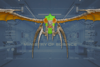
“一种全新的飞行终结族变种毫无征兆地突然出现在所有终结族行星上。虽然情报部一直认为这种情况有可能发生，但进化的突然性表明异见分子隐瞒的可能性极高。灭虫终结剂的部署时机恰巧合适——毫无疑问，它避免了一场更糟的进化发生。绝地潜兵受命在遇到这些突变体时一律予以消灭。
— 超级地球快报
the 尖啸虫 是一种小型飞行  终结族 会采用打了就跑的战术，俯冲攻击 绝地潜兵 before flying back up to the skies.
终结族 会采用打了就跑的战术，俯冲攻击 绝地潜兵 before flying back up to the skies.
尖啸虫 can be found 生成 from 尖啸虫 Nests, which begin appearing on  挑战。约150米范围内的绝地潜兵会促使虫巢开始生成尖啸虫。
挑战。约150米范围内的绝地潜兵会促使虫巢开始生成尖啸虫。
Starting on  困难，行动中可能出现漫游尖啸虫 操作 修正，它会生成在地图上巡逻的尖啸虫群。
困难，行动中可能出现漫游尖啸虫 操作 修正，它会生成在地图上巡逻的尖啸虫群。
一旦有 尖啸虫 将某名绝地潜兵标记为目标后，它们会盘旋并俯冲，以掠袭方式用剃刀般锋利的爪子砍杀绝地潜兵。一般来说，这些刀翼终结族总是瞄准绝地潜兵的手臂和躯干，但也曾有过斩首的记录。
死亡后，一只 尖啸虫的尸体砸到任何东西都会造成伤害。
| 部件名称 | 生命值1 | 护甲值2 | 耐久2 | 主血量占比3 | 溢出上限4 | 构造5 | 致命 | ExDR6 | |
|---|---|---|---|---|---|---|---|---|---|
| Main | 80 |

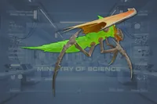 |
0% | - | - | None | Yes | 0% | |
| Head | 30 |
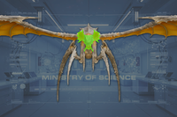
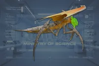 |
0% | 100% | Yes | None | Yes | 100% | |
| Limbs | 30 |
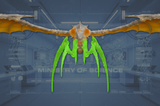
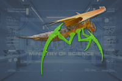 |
0% | 40% | No | None | No | 100% | |
| 翅膀(2) | 20 |
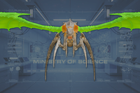
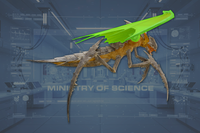 |
100% | 30% | Yes | None | Yes | 100% |
Disclaimer: Each highlighted part with a count has its own 生命值. Parts without a count share 生命值 pools.
俯冲轰炸
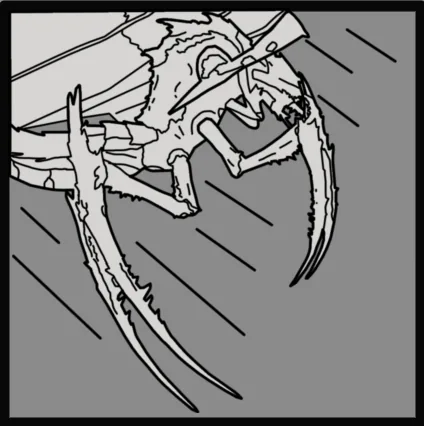
| 属性 | Value | |
|---|---|---|
| 50斩击伤害 50耐久伤害 | ||
| 3/0/0/0 | ||
| 近战 | ||
| 近战 | ||
| 20 | ||
| 20 | ||
| 10 | ||
尖啸虫开始缓慢出现于……的部署期间 终结族控制系统，一座由…… Termicide投放塔构成的网络遍布 屏障行星 as part of 操作 英勇 Enclosure。当终结族遏制体系在四颗行星上全面激活后，……的数量 尖啸虫 and 尖啸虫巢穴在终结族行星上的数量因此增加，而超级地球对此没有任何官方表态。
直到随后的……后期 解放 Zagon Prime 和 Fori Prime 的重要指令 超级地球才承认这种新的终结族变种。承认的方式是一份快报，声称灭虫终结剂避免了一场更糟糕的进化，并将责任归咎于保持无线电静默的异见分子。
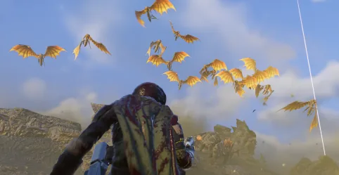
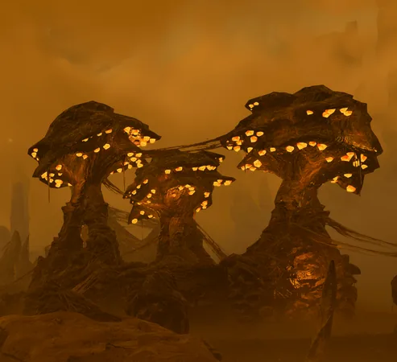
1.006.202
2026-04-28
Fixes
Change
1.001.201
2024-10-29
Fix
1.000.400
2024-06-13
未记录的新增
1.000.302
2024-05-07
Change
1.000.200
2024-04-02
Changes
1.000.102
2024-03-12
未记录的新增